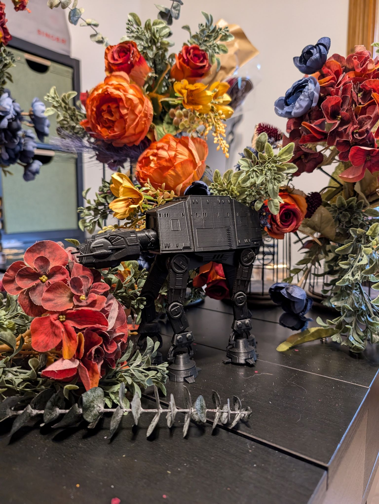

CNC + 3D PRINT
Although I am new to the 3D world, I dove right in to 3D-modeling and made Save The Date magnets for my wedding guests. This has been by far the most challenging to pick up but it's a pretty cool feeling to say, "I made that!" when I finally got a prototype to print. I'm still at the beginning stages, so the more complex shapes like the AT-AT in the picture below is no credit to me. I just wanted to appreciate their efforts to the fullest!

CRICUT CUTTING
Cricut creations are a recent discovery that came about at the same time as the CNC creations. Learning how to use the Maker 3 was quick and intuitive. This lead to immediate brainstorming about the endless possibilities I could create. As I started producing mock-ups, there were a bit of hurdles to overcome when producing clean and crisp prints. I managed to face those challenges as they were just mere obstacles, but it did not stop me from making what I envisioned. I'm confident that if all goes well with this application process, those obstacles will become inexistent and creators will be able to flourish their creations beyond imagined!